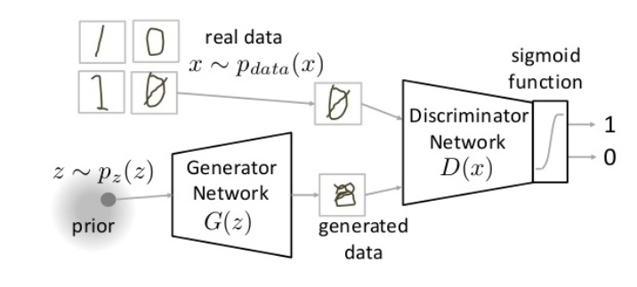

Generative adversarial networks
We can model two networks: one that tries to generate new data and another one that tries to discriminate between real and fake data. 
The complete training process is:
def train():
for _ in range(train_steps):
for _ in range(discriminator_steps):
noise = sample_noise_from_prior(m)
example = sample_example_from_generating(m)
update_discriminator(noise, example)
noise = sample_noise_from_prior(m)
update_generator()
The discriminator is trained with the formula: While the generatori is trained with the formula:
Conditional Gans
If, as in the case for CVAEs we want the generator to generate different data depending on a imput label, we must also modify the discrimiator so that it can classify not only real or fake data but also what the data is representing.